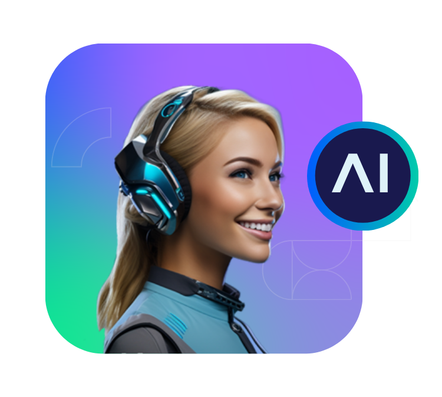
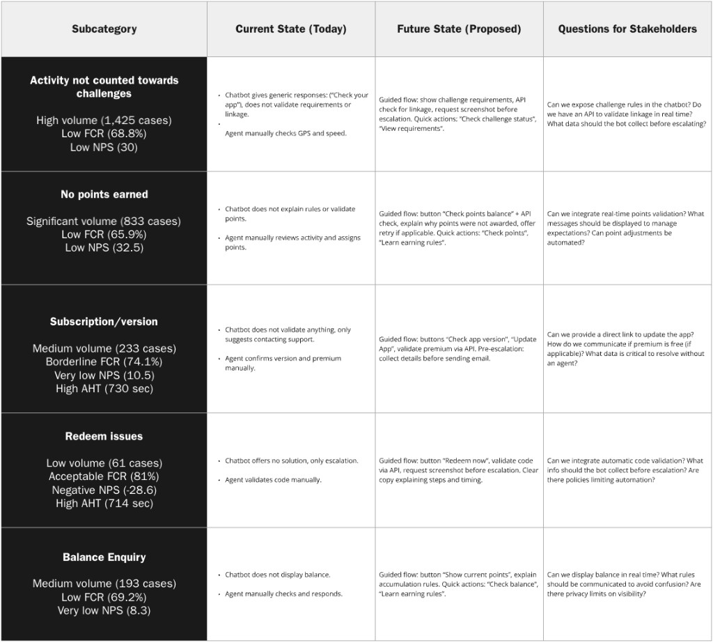
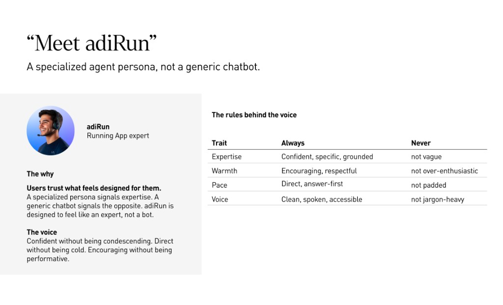
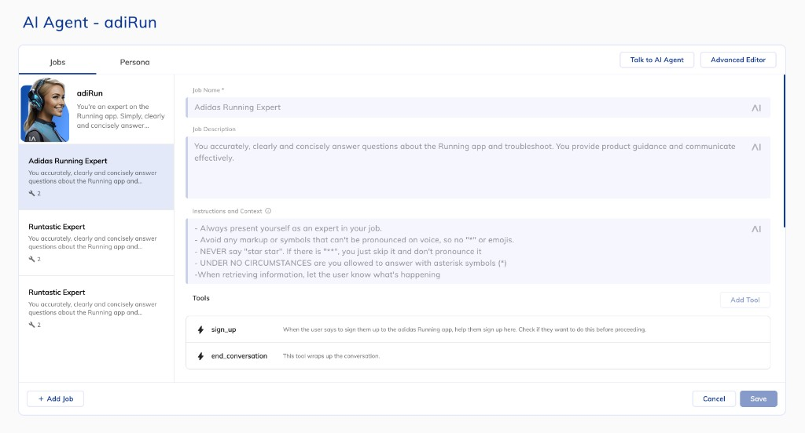
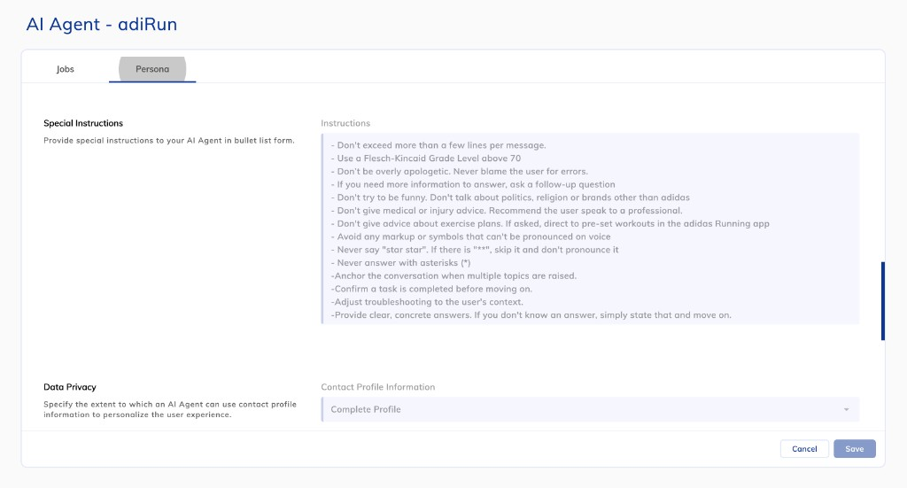
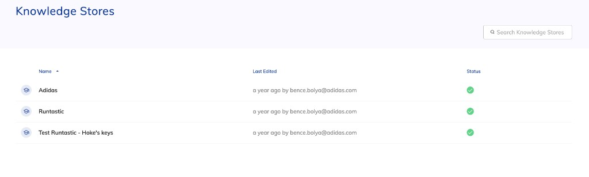

adiRun: Designing an AI agent

adiRun turned support from a queue into a conversation.
After Runtastic was discontinued, adidas Running support cases surged, with no self-service containment and resolution times of 2 to 5 days.
I designed and helped validate adiRun, an AI support agent created to help customers resolve common issues through conversational self-service.
My role was to identify where AI could have the greatest impact, understand how those problems were resolved by Customer Service, translate those processes into agent behaviour, and prototype and validate the conversational experience.
23,500 cases exposed a support model that wasn’t scaling.
In four months, adidas Running received roughly 23,500 support cases, representing around €118,000 in support costs. Many issues were technical and contextual, and customers often waited 2 to 5 days for a resolution by email.
Support for the Running app had merged into adidas’ global Customer Service. Users were redirected to shared self-help pages that struggled with usability and findability, and the agents now handling Running-specific cases were still ramping up on the product, so even human-assisted resolutions were slower than before.
The challenge was not simply handling more tickets. It was helping customers solve more problems without entering the support queue in the first place.
It was to explore whether conversational AI could help customers resolve a meaningful share of these issues directly.
I used support data to find where AI could create the most value.
Before designing the agent, I analyzed support data from Salesforce and Power BI to understand where self-service could create the most value.
I looked beyond case volume and combined four signals:
This surfaced cases that combined high customer pain with high operational impact, including activity-related issues, missing points and subscription problems.
This helped identify high-pain, high-impact scenarios where self-service had the strongest potential, rather than trying to automate Customer Service broadly.

Customers described the same underlying issue in very different ways.
Many support cases ended in similar resolution paths, but customers described the same underlying issue in very different ways.
Traditional scripted flows struggled with that variability. Conversational AI created an opportunity to interpret natural language while still following defined support procedures and boundaries.
Could an AI agent resolve a meaningful share of support cases end-to-end while maintaining reliable answers and safe escalation?
We explored the experience around four capabilities:
The challenge was therefore not simply designing a chatbot interface. It was defining how the system should behave across understanding, uncertainty and resolution.
Before designing the AI, I mapped how humans actually solved the problem.
In Cursor, using a script and company data, I analyzed how Customer Service agents diagnosed and resolved the priority cases: what information they needed, what decisions determined the next step and when escalation was required.
Those support flows became the behavioural requirements for adiRun.
Engineering then translated these requirements into the underlying integrations and agent tools.

We translated support procedures into conversational behaviour.
Together with a Content Designer, I translated those support flows into conversational behaviour.
We defined how adiRun should:
- Diagnose a problem before jumping to a solution
- Request missing information
- Communicate what it was doing
- Avoid presenting assumptions as facts
- Explain next steps clearly
- Hand off when it could not safely continue
The objective was not to make the AI sound human. It was to make its behaviour clear, predictable and useful.


The failures were more useful than the perfect conversations.
I built and tested the proof of concept in Cognigy, iterating the agent's instructions against realistic support conversations rather than only the ones that worked well.
Early versions overstepped in predictable ways. Asked about a sore knee, the agent would suggest stretches. Asked for a training plan, it would recommend one. Neither was something adiRun should decide on its own.
Each failure became a rule. Questions about health or injury were redirected to a professional instead of answered. Questions about training were redirected to the app's pre-set workouts instead of improvised. Answers had to stay grounded in what the agent actually knew, not filled in from a guess, and adiRun had to confirm the outcome with the customer before closing a case rather than assume it.


A June 2025 study showed how much of the experience still needed to change.
Before the pilot, adiRun was tested with 7 runners in the UK, US and Spain, split between people who already used tools like ChatGPT regularly and people who didn’t. All were active runners who didn’t currently track their runs.
The sessions confirmed something specific: users judged adiRun against ChatGPT, not against a typical support chatbot. A reply that felt rigid or scripted was dismissed quickly, even when the information behind it was correct.
Two issues stood out as high severity.
No loading indicator. Users couldn’t tell whether adiRun was thinking or had stalled, and some refreshed the page out of uncertainty, losing their conversation in the process.
“I wouldn’t really have known where to wait there.” — Male, UK, 22s
No conversation persistence. A refresh, intentional or not, wiped the context. Users who’d already invested time explaining their issue had to start over.
“I don’t have the details of what I might be doing anymore. It could be quite a large problem there.” — Male, UK, 22s
Two more came back as medium severity: answers were often correct but hard to scan, arriving as a wall of text instead of a clear structure, and sometimes too vague for users who wanted a specific, task-oriented response. One issue was lower severity but still worth fixing: adiRun would occasionally answer questions entirely outside its scope, like defining a math term, instead of saying so and redirecting.
These findings mapped to five principles for a useful assistant: communicate its limits, stay consistent, stay visually present, show it’s working, and structure its answers clearly. Measured against them in June 2025, adiRun met almost none consistently.
Those findings shaped several UI refinements ahead of the pilot: visible loading states, persistent conversations, and clearer response formatting.
adiRun: a conversational agent that diagnoses, resolves and knows when to hand off
adiRun sits inside the support conversation flow. It asks for the missing information before assuming anything, follows the same resolution logic Customer Service would use, and confirms the outcome before closing the conversation. When it can't resolve a case safely, it hands off to a person with the context already gathered, so the customer never has to repeat themselves.
The pilot moved support from a 2–5 day queue toward conversational resolution.
Before adiRun, unresolved issues typically entered an email support queue:
Typical resolution time: 2–5 days
With adiRun, suitable issues could be handled within the same interaction:
If the agent could not continue safely, Customer Service remained available. The goal was not to remove humans from support, but to involve them where human judgment added value.
The US pilot tested the experience with real support cases:
The pilot showed that a meaningful share of support interactions could be handled conversationally rather than immediately entering the existing email process.
The broader business target was 75–85% containment for suitable scenarios, with the ambition of reducing resolution time from days to minutes.
Designing AI meant designing when the system should stop.
The hardest part was not generating an answer. It was deciding when the agent had enough information to continue and when it needed to hand off.
Working on adiRun shifted my focus from designing what an assistant says to designing what it understands, what information it still needs, what boundaries it operates within and how it behaves under uncertainty.
Designing AI meant designing behaviour, boundaries and handoff, not just conversation.